-
Архитектура клиент – сервер в технологии управления удаленными базами данных
Вычислительная модель клиент-сервер исходно связана с появлением открытых систем в 1990-х гг. Клиентский процесс запрашивал некоторые услуги, а серверный — обеспечивал их выполнение. Основной принцип модели клиент—сервер применительно к технологии управления базами данных заключается в разделении функций стандартного интерактивного приложения на пять групп, имеющих различную природу: -функции ввода и отображения данных (Presentation Logic); -прикладные функции, определяющие основные алгоритмы решения задач приложения (Business Logic); -функции обработки данных внутри приложения (DataBase Logic); -функции управления информационными ресурсами (DataBase Manager System); -служебные функции, играющие роль связок между функциями первых четырех групп.
-
Модель удаленного управления данными, или модель файлового сервера
Модель удаленного управления данными также называется моделью файлового сервера. В этой модели презентационная логика и бизнес-логика располагаются на клиенте. На сервере располагаются файлы с данными и поддерживается доступ к файлам. Функции управления информационными ресурсами в этой модели находятся на клиенте. В этой модели файлы базы данных хранятся на сервере, клиент обращается к серверу с файловыми командами, а механизм управления всеми информационными ресурсами, собственно база мета-данных, находится на клиенте.
-
Модель сервера баз данных. Модель сервера приложений.
Модель сервера баз данных (DBS) - реализована в некоторых реляционных СУБД (Informix, Ingres, Sybase, Oracle). Ее основу составляет механизм хранимых процедур - средство программирования SQL-сервера. Процедуры хранятся в словаре баз данных, разделяются между несколькими клиентами и выполняются на том же компьютере, где функционирует SQL-сервер. В DBS-модели компонент представления выполняется на компьютере-клиенте, в то время как, прикладной компонент оформлен как набор хранимых процедур и функционирует на компьютере-сервере БД. Там же выполняется компонент доступа к данным, т.е. ядро СУБД.
-
Основные свойства распределенных баз данных.
Распределенная база данных — это набор отношений, хранящихся в разных узлах компьютерной сети и логически связанных таким образом, чтобы составлять единую совокупность данных. Распределенная база данных предполагает хранение данных на нескольких узлах сети, обработку данных и их передачу между этими узлами в процессе выполнения запросов. Разбиение данных в распределенной базе данных может достигаться путем хранения различных таблиц на разных компьютерах или хранения разных фрагментов одной таблицы на разных компьютерах. Для пользователя (или прикладной программы) не должно иметь значения, каким образом распределены данные между компьютерами. Работа с распределенной базой данных должна осуществляться так же, как и с централизованной.
-
Отличие двухуровневой клиент – серверной схемы организации баз данных от трехуровневой
-
Принципы разработки и эксплуатации систем управления удаленными базами данных
CALS-технологии дают уменьшить объём проектных работ. Описание большинства узлов систем, машин и оборудования осуществляется в специальных унифицированных форматах информации сетевых серверов. Все они доступны для любого пользователя CALS-технологий. Это такое особое средство, с помощью которого происходит интеграция промышленных автоматизированных систем управления предприятием (АСУП) в одну общую многофункциональную систему. + сокращают затраты на сам этап проектирования + результативный доступ + сокращение затрат на эксплуатацию
-
Этапы проектирования многопользовательских баз данных
Этапы проектирования многопользовательских БД: 1. Разработка концептуальной модели. * Определение цели создания ИС. * Установление состава пользователей БД. * Разработка концептуальной модели БД. * Разработка ТЗ на проектирования локальных СУБД. * Определение трудовых и материальных ресурсов для разработки БД. 2. Разработка проекта субд в соответствие с тз. * Сбор, анализ и подготовка исходной информации об объектах предметной обл. * Разработка оптимального состава и структуры таблиц БД. * Установление логических связей между таблицами. * Разработка необходимого числа запросов для реализации поставленной задачи. * Разработка необходимого числа отчетов. * Разработка форм пользовательского интерфейса. * Разработка модулей, автоматизирующих работу пользователей. 3. Реализация проекта и разработка технической документации. * Заполнение таблиц БД данными. * Проверка функционирования СУБД. * Разработка инструкция для пользователя.
-
Этапы жизненного цикла СУБД. Администрирование баз данных.
ЖЦБД состоит из семи этапов: * предварительное планирование; * проверка осуществимости; * определение требований; * концептуальное проектирование; * логическое проектирование; * физическое проектирование; * оценка работы и поддержка базы данных. Администрирование базами данных предусматривает выполнение функций, направленных на обеспечение надежного и эффективного функционирования системы баз данных, адекватности содержания базы данных информационным потребностям пользователей, отображения в базе данных актуального состояния предметной области. Необходимость персонала, обеспечивающего администрирование данными в системе БД в процессе функционирования, является следствием централизованного характера управления данными в таких системах, постоянно требующего поиска компромисса между противоречивыми требованиями к системе в социальной пользовательской среде. Хотя такая необходимость и признавалась на ранних стадиях развития технологии баз данных, четкое понимание и структуризация функций персонала, занятого администрированием, сложилось только вместе с признанием многоуровневой архитектуры СУБД.
-
Применение СУБД Access для разработки проекта удаленных баз данных.
Применение Microsoft Access для проектирования многопользовательских удаленных баз данных повышает производительность труда при создании информационных систем и в большей степени гарантирует качество проектирования за счет: • активного привлечения к разработке приложений конечных пользователей; • максимального использования визуальных (диалоговых) средств проектирования, сводящих к минимуму ошибки разработчика; • минимальной трудоемкости разработки проекта базы данных.
-
Назначение языка SQL. Операторы манипулирования данными.
Язык структурированных запросов SQL служит для вывода структурированной заданной информации из базы. SQL также применяется для изменения данных, добавления данных из базы. Язык SQL относится к функциональным языкам программирования. Он отличается от алгоритмических языков. Основу языка составляет не алгоритм как таковой, а совокупность команд, определяющих взаимоотношения информационных множеств и подмножеств.
-
Службы управления базами данных SQL Server 2014.
Ядро СУБД Агент СУБД Обозреватель СУБД
-
Системные базы данных SQL Server 2014.
Системная база данных Description База данных master В этой базе данных хранятся все данные системного уровня для экземпляра SQL Server. База данных msdb Используется агентом SQL Server для планирования предупреждений и задач. Шаблон базы данных Используется в качестве шаблона для всех баз данных, создаваемых в экземпляре SQL Server. Изменение размера, параметров сортировки, модели восстановления и других параметров базы данных model приводит к изменению соответствующих параметров всех баз данных, создаваемых после изменения. База данных ресурсов База данных только для чтения. Содержит системные объекты, которые входят в состав SQL Server. Системные объекты физически хранятся в базе данных Resource , но логически отображаются в схеме sys любой базы данных. База данных tempdb Рабочее пространство для временных объектов или взаимодействия результирующих наборов.
-
Основные требования к разработке пользовательского интерфейса базы данных
Создание пользовательского приложения требует разработки так называемого дружественного интерфейса пользователя, т.е. организации диалога между пользователем и компьютером (клиентом и сервером). Основным способом организации диалога является разработка диалоговых форм, которые по назначению можно подразделить на следующие группы: • для ввода данных в таблицы; • для ввода условий обработки информации в запросы; • для автоматизации работы с объектами базы данных.
-
Разработка пользовательского интерфейса средствами визуального проектирования
Чтобы информационная система была удобна для работы пользователя, кроме создания эффективной модели данных (разработки состава и взаимодействия таблиц и запросов) необходимо разработать удобный дружественный пользовательский интерфейс. Разработка интерфейса пользователя связана с настройкой панелей инструментов, созданием пользовательского меню, разработкой различных диалоговых форм.
-
WEB-технологии в разработке удаленных баз данных
Развитие интернет-технологий и систем управления удаленными базами данных однозначно показало высокую эффективность создания корпоративных баз данных, доступ к которым осуществляется в среде Web. Переход к интеграции СУБД со средой Web требует выполнения следующих условий: * обеспечение защиты конфиденциальной информации; * использование способов подключения удаленных пользователей, не зависящих от типов данных и программного обеспечения, в том числе с учетом развития СУБД как в настоящее время, так и в будущем; * обеспечение возможности взаимодействия с базой данных независимо от типа используемого броузера или Web-cepeepa; * обеспечение открытости архитектуры, позволяющей взаимодействовать с разнообразными системами и технологиями, доступа к данным, включая поддержку транзакций, охватывающих несколько запросов HTTP, и поддержку аутентификации на уровне сеанса и приложения; * приемлемая производительность; * минимальные требования к администрированию; * наличие набора высокоуровневых инструментов разработки, позволяющих относительно просто и быстро создавать, внедрять в эксплуатацию и сопровождать новые приложения.
-
Каково назначение следующих протоколов передачи информации: FTP,SMTP,Telnet, DNS,POP?
FTP — протокол передачи файлов по сети, является одним из старейших прикладных протоколов, появившихся задолго до HTTP, и даже до TCP/IP, в 1971 году; в первое время он работал поверх протокола NCP. Он и сегодня широко используется для распространения ПО и доступа к удалённым хостам. SMTP — это широко используемый сетевой протокол, предназначенный для передачи электронной почты в сетях TCP/IP. SMTP впервые был описан в RFC 821; последнее обновление в RFC 5321 включает масштабируемое расширение — ESMTP. В настоящее время под «протоколом SMTP» как правило подразумевают и его расширения. TELNET — сетевой протокол для реализации текстового терминального интерфейса по сети. Название «telnet» имеют также некоторые утилиты, реализующие клиентскую часть протокола. Современный стандарт протокола описан в RFC 854. Выполняет функции протокола прикладного уровня модели OSI. DNS (англ. Domain Name System «система доменных имён») — компьютерная распределённая система для получения информации о доменах. Чаще всего используется для получения IP-адреса по имени хоста (компьютера или устройства), получения информации о маршрутизации почты и/или обслуживающих узлах для протоколов в домене (SRV-запись). POP3 (англ. Post Office Protocol Version 3 — протокол почтового отделения, версия 3) — стандартный интернет-протокол прикладного уровня, используемый клиентами электронной почты для получения почты с удалённого сервера по TCP-соединению. POP и IMAP (Internet Message Access Protocol) — наиболее распространённые интернет-протоколы для извлечения почты. Практически все современные клиенты и серверы электронной почты поддерживают оба стандарта. Протокол POP был разработан в нескольких версиях, нынешним стандартом является третья версия (POP3). Большинство поставщиков услуг электронной почты (такие как Hotmail, Gmail и Yahoo! Mail) также поддерживает IMAP и POP3. Предыдущие версии протокола (POP, POP2) устарели.
-
Защита информации в базе данных и управление доступом к данным
* Идентификация и аутентификация пользователей * Авторизация пользователей * Разграничение доступа Защита систем баз данных – это технологический термин, который включает в себя множество процессов, инструментов и методологий, обеспечивающих безопасность. Наиболее эффективные меры предотвращения несанкционированного доступа к информации: * разделение баз данных и веб-серверов; * шифрование сохраненных файлов и резервных копий; * регулярное обновление используемого программного обеспечения до последних версий; * осуществлять контроль безопасности.
-
Модификация таблиц баз данных с помощью курсоров
Курсор – это объект, позволяющий по отдельности обрабатывать строки из результирующего набора, возвращенного оператором SELECT. построчная обработка набора данных с помощью курсора в подавляющем большинстве случаев выполняется существенно медленнее, чем аналогичные действия, выполняемые средствами SQL для обработки множеств строк. Поэтому курсоры рекомендуется использовать только в тех случаях, когда описание требуемых действий через операции с множествами строк явно неэффективно или вообще невозможно. Работа с курсором обычно включает следующие шаги: • объявление курсора; • открытие курсора; • считывание в переменные значений атрибутов из первой записи курсора; • перемещение по курсору (обычно в цикле) и обработка записей курсора; • закрытие курсора; • освобождение памяти, отведенной курсору.
-
Статические и динамические Web-страницы
-
Требования к интеграции удаленных баз данных со средой Web
-
Генерация Web-страниц визуальными средствами Microsoft Access
В Access, начиная с версии 2000, предусмотрены три программы-мастера, предназначенные для автоматической генерации HTML-страниц на основе таблиц, запросов, форм или отчетов, представленных в базе данных: • мастер создания статических страниц; • мастер создания динамических страниц на основе технологии ASP; • мастер создания динамических страниц, формируемых с помощью страниц доступа к данным.
-
Показатели технологической безопасности информационных систем
-
Требование к архитектуре информационных систем
-
Методы обеспечения технологической безопасности информационных систем
Методы снижения угроз безопасности ИС, вызванных дефектами программных средств и баз данных Уровень и влияние внутренних дестабилизирующих факторов, а также некоторых внешних угроз на безопасность применения ИС определяется в наибольшей степени качеством технологий проектирования, разработки, сопровождения и документирования ИС и их основных компонент — программных средств и баз данных. При ограниченных ресурсах на разработку ПС и БД для достижения заданных требований по безопасности необходимо управление обеспечением качества в течение всего цикла создания программ и данных. Такое управление предполагает высокую дисциплину и проектировочную культуру всего коллектива специалистов, поддержанную методиками, типовыми документами и средствами автоматизации разработки. Оперативные методы повышения безопасности функционирования программных средств и баз данных Выбор метода оперативного восстановления происходит в условиях значительной неопределенности сведений о характере предотказовой ситуации и степени ее возможного влияния на работоспособность и безопасность ИС. Восстановление работоспособности желательно производить настолько быстро, чтобы отказовую ситуацию можно было свести до уровня сбоя. Оперативная индикация отклонений от нормы при функционировании ИС позволяет пользователям контролировать аномалии в процессе обработки данных и в особых случаях оперативно корректировать реакцию системы защиты на выявление искажений.
-
Поясните следующие критерии безопасности: устойчивость, восстанавливаемость, коэффициент готовности
Устойчивость зависит от уровня неустраненных дефектов и ошибок и способности ПС реагировать на их проявления так, чтобы это не отражалось на показателях надежности. Последнее определяется эффективностью контроля данных, поступающих из внешней среды, и средств обнаружения аномалий функционирования ПС. Восстанавлиемость характеризуется полнотой и длительностью восстановления функционирования программ в процессе перезапуска - рестарта. Перезапуск должен обеспечивать возобновления нормального функционирования ПС, на что требуются ресурсы ЭВМ и время. Поэтому полнота и длительность восстановления функционирования после сбоев отражают качество и надежность ПС и возможность его использования по прямому назначению. Коэффициент готовности. Этот показатель отражает вероятность иметь восстанавливаемую систему в работоспособном состоянии в произвольный момент времени. Значение коэффициента готовности соответствует доле времени полезной работы системы на достаточно большом интервале, содержащем отказы и восстановления.
-
Дисковое хранилище с системой уничтожения данных
Для мгновенного уничтожения информации с магнитных носителей используют отдельно стоящую или встроенную в корпус компьютера систему. В настоящее время оптимальным подходом, обеспечивающим уничтожение информации без уничтожения носителя, является использование физических методов, заключающихся в перестройке структуры магнитного материала рабочих поверхностей носителя. Для уничтожения информации на магнитной пластине накопителя на жестком магнитном диске (НЖМД) необходимо устранить неоднородность вектора намагниченности участков его рабочих поверхностей, несущих информацию о предшествующих записях. Изменение структуры поля вектора намагниченности магнитного материала может быть выполнено несколькими принципиально различными способами. • Быстрое нагревание материала рабочего слоя носителя до точки потери намагниченности носителя (точки Кюри). • Размагничивание рабочих поверхностей носителя. • Намагничивание рабочих поверхностей носителя до максимально возможных значений (до насыщения). • Комбинированный, т. е. нагревание и намагничивание либо нагревание и размагничивание
-
Организационные рекомендации по обеспечению безопасности эксплуатации удаленных баз данных
1.Требования к организации помещений с компьютерным обо- рудованием. 1.1 Размещение специального оборудования должно обеспечивать невозможность неконтролируемого проникновения в эти помещения посторонних лиц. 1.2 Помещения с компьютерным оборудованием должны находиться в контролируемой зоне, иметь прочные входные двери с надежными замками и средствами регистрации доступа. При расположении этих помещений на первых и последних этажах зданий, а также при наличии рядом с их окнами балконов и пожарных лестниц рекомендуется оборудовать окна внутренними (раздвижными) решетками. Также двери и окна данных помещений рекомендуется оборудовать охранной сигнализацией. 2.Требования по организации хранения и использования ключе- вой информации. 2.1 Порядок хранения и использования ключевых дискет с секретными ключами подписи и шифрования должен исключать возможность несанкционированного доступа к ним. 2.2 К каждой ключевой дискете должен иметь доступ только один человек — владелец записанных на ней ключей, который несет персональную ответственность за их использование. 2.3 Для хранения секретных ключей в помещениях с компьютерным оборудованием должны иметься надежные металлические хранилища (сейфы), оборудованные надежными запирающими устройствами с двумя экземплярами ключей (один ключ должен быть у исполнителя, другой — в службе безопасности). 2.4 По окончании рабочего дня носители ключевой информации следует убирать в сейф. 2.5 Во время работы с секретными ключами должен быть исключен доступ к носителям ключевой информации кого-либо, кроме их владельца. 2.6 Хранение секретных ключей допускается в одном хранилище с другими документами, но отдельно от них и в упаковке, исключающей возможность негласного доступа к ним. 2.7 Для обеспечения работоспособности системы в случае сбоя носителя ключевой информации должно быть организовано резервное копирование ключевых дискет. При этом хранение резервных копий ключевых дискет и доступ к ним должны быть организованы в соответствии со следующими требованиями: • не допускается снятие несанкционированных копий с ключевых носителей; • не допускается знакомить кого-либо с содержанием ключевых носителей или передавать кому-либо ключевые носители; • не допускается вывод секретных ключей подписи и шифрования на дисплей или принтер; • нельзя вставлять ключевую дискету в дисковод компьютера в режимах, не предусмотренных функционированием системы, а также в дисководы других компьютеров; • нельзя записывать на дискету с ключами постороннюю информацию.
-
Восстановление базы данных в критических ситуациях
Восстановление базы данных может производиться в следующих случаях: * • Индивидуальный откат транзакции. Откат индивидуальной транзакции может быть инициирован либо самой транзакцией путем подачи команды ROLLBACK, либо системой. СУБД может инициировать откат транзакции в случае возникновения какой-либо ошибки в работе транзакции (например, деление на нуль) или если эта транзакция выбрана в качестве жертвы при разрешении тупика. * • Мягкий сбой системы (аварийный отказ программного обеспечения). Мягкий сбой характеризуется утратой оперативной памяти системы. При этом поражаются все выполняющиеся в момент сбоя транзакции, теряется содержимое всех буферов базы данных. Данные, хранящиеся на диске, остаются неповрежденными. Мягкий сбой может произойти, например, в результате аварийного отключения электрического питания или в результате неустранимого сбоя процессора. * • Жесткий сбой системы (аварийный отказ аппаратуры). Жесткий сбой характеризуется повреждением внешних носителей памяти. Жесткий сбой может произойти, например, в результате поломки головок дисковых накопителей. Во всех трех случаях основой восстановления является избыточность данных, обеспечиваемая журналом транзакций. Как и страницы базы данных, данные из журнала транзакций не записываются сразу на диск, а предварительно буферизируются в оперативной памяти. Таким образом, система поддерживает два вида буферов - буферы страниц базы данных и буферы журнала транзакций.
-
Управление буферами базы данных. Механизм резервного копирования
Организация управления буферами базы данных играет важную роль в процессе восстановления информации. Рассмотрим применяемые для этого методы. Процессы управления буферами базы данных, которые применяются для считывания и записи страницы данных во вторичную память, осуществляются специальной программой, называемой диспетчером буферов. Такая программа должна предусматривать считывание страниц с диска в буферы до полного их заполнения, а затем применение той или иной стратегии замещения для определения того, какой буфер (буферы) необходимо принудительно записать на диск, чтобы освободить место для новых страниц, которые должны быть считаны с диска. Если страница не находится ни в одном из буферов, то диспетчер буферов выполняет следующие действия: • выбирает буфер, предназначенный для замещения (называемый замещаемым буфером), и увеличивает значение переменной на единицу; • если переменная dirty равна нулю, производит запись буфера на диск; • считывает страницу с диска в буфер замещения и присваивает переменной dirty нулевое значение. Любая СУБД должна предоставлять механизм, позволяющий создавать резервные копии базы данных и файла ее журнала через установленные интервалы времени. Резервное копирование может выполняться как для всей базы данных в целом, так и для изменившейся ее части. В последнем случае в копию помещаются сведения только об изменениях, накопившихся с момента создания предыдущей полной или измененной резервной копии системы. Как правило, резервные копии создаются на автономных носителях. Файл журнала. Для фиксации хода выполнения транзакций СУБД использует специальный файл, который называют журналом. Этот файл содержит сведения обо всех обновлениях, выполненных в базе данных. В файл журнала помещают записи о транзакциях и записи контрольных точек. Записи о транзакциях включают в себя: • идентификатор транзакции; • тип записи журнала (начало транзакции, операции вставки, обновления или удаления, отмену или фиксацию транзакции); • идентификатор элемента данных, вовлеченного в операцию обработки базы данных (операции вставки, удаления и обновления); • копию элемента данных до операции, т.е. его значение до изменения (только операции обновления и удаления); • копию элемента данных после операции, т.е. его значение после изменения (только для операций обновления и вставки); • служебную информацию файла журнала, содержащую указатели на предыдущую и следующую записи журнала для этой транзакции (все операции).
-
Ориентация развития СУБД на расширенную реляционную модель.
Одним из основных положений реляционной модели данных является требование нормализации отношений: поля кортежей могут содержать лишь атомарные значения. Для традиционных приложений реляционных СУБД – банковских систем, систем резервирования и т.д. – это вовсе не ограничение, а даже преимущество, позволяющее проектировать экономные по памяти БД с предельно понятной структурой. Запросы с соединениями в таких системах сравнительно редки, для динамической поддержки целостности используются соответствующие средства SQL. Однако с появлением эффективных реляционных СУБД их стали пытаться использовать и в менее традиционных прикладных системах – САПР, системах искусственного интеллекта и т.д. Такие системы обычно оперируют сложно структурированными объектами, для реконструкции которых из плоских таблиц реляционной БД приходится выполнять запросы, почти всегда требующие соединения отношений. В соответствии с требованиями разработчиков нетрадиционных приложений появилось направление исследований баз сложных объектов. Основной смысл этого направления состоит в том, что в руки проектировщиков даются настолько же мощные и гибкие средства структуризации данных, как те, которые были присущи иерархическим и сетевым системам базам данных. Однако важным отличием является то, что в системах баз данных, поддерживающих сложные объекты, сохраняется четкая граница между логическим и физическим представлениями таких объектов. В частности, для любого сложного объекта (произвольной сложности) должна обеспечиваться возможность перемещения или копирования его как единого целого из одной части базы данных в другую ее часть или даже в другую базу данных. Это очень обширная область исследований, в которой затрагиваются вопросы моделей данных, структур данных, языков запросов, управления транзакциями, журнализации и т.д. Во многом эта область соприкасается с областью объектно-ориентированных БД. (И в этой области настолько же плохо обстоят дела с теоретическим обоснованием.) Близкое, но, вообще говоря, основанное на других принципах направление представлено системами баз данных, основанных на реляционной модели, в которой не обязательно поддерживается первая нормальная форма отношений. Напомним, что требование атомарности значений, которые могут храниться в элементах кортежей отношений, является базовым требованием классической реляционной модели. Приведение исходного табличного представления предметной области к “плоскому” виду является обязательным первым шагом в процессе проектирования реляционной базы данных на основе принципов нормализации. С другой стороны, абсолютно очевидно, что такое "уплощение" таблиц хотя и является необходимым условием получения неизбыточной и "правильной" схемы реляционной базы данных, в дальнейшем потенциально вызывает выполнение многочисленных соединений, наличие которых может свести на нет все преимущества "хорошей" схемы базы данных. Так вот, в "ненормализованных" реляционных моделях данных допускается хранение в качестве элемента кортежа кортежей (записей), массивов (регулярных индексированных множеств данных), регулярных множеств элементарных данных, а также отношений. При этом такая вложенность может быть, по существу, неограниченной. Если внимательно продумать эти идеи, то станет понятно, что они приводят (только) к логически обособленным (от физического представления) возможностям иерархической модели данных. Но это уже не так уж и мало, если учесть, что к настоящему времени фактически полностью сформировано теоретическое основание реляционных баз данных с отказом от нормализации. Скорее всего, в этой теории все еще имеются темные места (они наличествуют даже в классической реляционной теории), но тем не менее большинство известных теоретических результатов реляционной теории уже распространено на ненормализованную модель, и даже такой пурист реляционной модели, как Дейт, полагает возможным использование ограниченной и контролируемой реляционной модели в SQL-3.
-
Объектно-ориентированные СУБД
Объектно-ориентированная (объектная) СУБД — система управления базами данных, основанная на объектной модели данных.[1] Эта система управления обрабатывает данные как абстрактные объекты, наделённые свойствами и использующие методы взаимодействия с другими объектами окружающего мира (объектами БД).
-
Языки программирования объектно-ориентированных баз данных
К настоящему моменту неизвестен какой-либо язык программирования ООБД, который был бы спроектирован целиком заново, начиная с нуля. Естественным подходом к построению языков программирования ООБД было использование (с необходимыми расширениями) некоторого существующего объектно-ориентированного языка. Одним из первых созданных для реализации объектно-ориентированного и функционального подходов к программированию является язык Лисп (Common Lisp). Потребность более эффективной реализации заставляет в качестве основы объектно-ориентированного языка использовать известные языки программирования Basic и Си++.
-
Системы баз данных основанные на правилах
Экстенсиональная и интенсиональная части базы данных Если внимательно присмотреться к тому, что реально хранится в базе данных, то можно заметить наличие трех различных видов информации. Во-первых, это информация, характеризующая структуры пользовательских данных (описание структурной части схемы базы данных). Такая информация в случае реляционной базы данных сохраняется в системных отношениях-каталогах и содержит главным образом имена базовых отношений и имена и типы данных их атрибутов. Во-вторых, это собственно наборы кортежей пользовательских данных, сохраняемых в определенных пользователями отношениях. Наконец, в-третьих, это правила, определяющие ограничения целостности базы данных, триггеры базы данных и представляемые (виртуальные) отношения. В реляционных системах правила опять же сохраняются в системных таблицах-каталогах, хотя плоские таблицы далеко не идеально подходят для этой цели. Активные базы данных По определению БД называется активной, если СУБД по отношению к ней выполняет не только те действия, которые явно указывает пользователь, но и дополнительные действия в соответствии с правилами, заложенными в саму БД. Легко видеть, что основа этой идеи содержалась в языке SQL времени System R. На самом деле, что есть определение триггера или условного воздействия, как не введение в БД правила, в соответствии с которым СУБД должна производить дополнительные действия? Плохо лишь то, что на самом деле триггеры не были полностью реализованы ни в одной из известных систем, даже и в System R. И это не случайно, потому что реализация такого аппарата в СУБД очень сложна, накладна и не полностью понятна. Дедуктивные базы данных По определению, дедуктивная БД состоит из двух частей: экстенциональной, содержащей факты, и интенциональной, содержащей правила для логического вывода новых фактов на основе экстенциональной части и запроса пользователя. Легко видеть, что при таком общем определении SQL-ориентированную реляционную СУБД можно отнести к дедуктивным системам. Действительно, что есть определенные в схеме реляционной БД представления, как не интенциональная часть БД. В конце концов не так уж важно, какой конкретный механизм используется для вывода новых фактов на основе существующих. В случае SQL основным элементом определения представления является оператор выборки языка SQL, что вполне естественно, поскольку результатом оператора выборки является порождаемая таблица. Обеспечивается и необходимая расширяемость, поскольку представления могут определяться не только над базовыми таблицами, но и над представлениями.
-
Фильтрация пакетов
Фильтрация пакетов — это избирательное управление потоками входящих или исходящих пакетов, основанное на анализе заголовка каждого пакета. Фильтр пакетов (или пакетный фильтр) выполняет функцию разграничения доступа узлов одного сегмента сети к отдельному узлу или множеству узлов другого сегмента компьютерной сети. Наиболее часто фильтры пакетов используют, чтобы отделить, например, небольшую локальную сеть или сервер от более крупной сети, например сети Интернет. Брандмауэры выполняют фильтрацию пакетов путем проверки заголовков входящих пакетов на предмет их удовлетворения определенным критериям, устанавливаемых с помощью правил фильтрации пакетов. Фильтрации подвергаются пакеты, поступающие как изнутри, так и извне локальной сети, причем фильтр работает асимметрично, различным образом обрабатывая входящие и исходящие пакеты. При поступлении пакета в брандмауэр, входящий в его состав маршрутизатор с фильтрацией пакетов извлекает из пакета заголовки и выполняет синтаксический анализ и проверку заголовков. Как правило, при этом проверяются заголовки, относящиеся к протоколам TCP, IP, UDP. Далее к пакету последовательно применяются правила фильтрации пакетов, причем в том порядке, в котором они сохранены в списке ACL брандмауэра.
-
Маршрутизатор
Маршрутиза́тор — специализированное устройство, которое пересылает пакеты между различными сегментами сети на основе правил и таблиц маршрутизации. Маршрутизатор может связывать разнородные сети различных архитектур. Для принятия решений о пересылке пакетов используется информация о топологии сети и определённые правила, заданные администратором. Маршрутизаторы работают на «сетевом» (третьем) уровне сетевой модели OSI, в отличие от коммутаторов (свитчей) и концентраторов (хабов), которые работают соответственно на втором и первом уровнях модели OSI. Чтобы передать сообщение от отправителя, находящегося в одной сети, получателю, находящемуся в другой сети, нужно совершить некоторое количество транзитных передач между сетями, или хопов (от hop — прыжок), каждый раз выбирая подходящий маршрут. Таким образом, маршрут представляет собой последовательность маршрутизаторов, через которые проходит пакет. Основные характеристики маршрутизаторов: 1) общая производительность в пакетах в секунду (пропускная способность); 2) набор поддерживаемых сетевых протоколов и протоколов маршрутизации; 3) набор поддерживаемых сетевых интерфейсов глобальных и локальных сетей (LAN или WAN). 4) количество портов; 5) возможность управления и мониторинга сети.
-
Языки программирования объектно-ориентированных баз данных
Одним из первых созданных для реализации объектно-ориентированного и функционального подходов к программированию является язык Лисп (Common Lisp). Потребность более эффективной реализации заставляет в качестве основы объектно-ориентированного языка использовать известные языки программирования Basic и С++. Потребность в поддержании в объектно-ориентированной СУБД не только языка (или семейства языков) программирования ООБД, но и развитого языка запросов в настоящее время признается практически всеми разработчиками. Система должна поддерживать легко осваиваемый интерфейс, прямо доступный конечному пользователю в интерактивном режиме. Наиболее распространенный подход к организации интерактивных интерфейсов с объектно-ориентированными системами баз данных основывается на использовании так называемых обходчиков. В этом случае конечный интерфейс обычно является графическим. На экране отображается схема (или подсхема) ООБД, и пользователь осуществляет доступ к объектам в навигационном стиле. Некоторые исследователи считают, что в этом случае разумно игнорировать принцип инкапсуляции объектов и предъявлять пользователю свойства объектов. В большинстве существующих систем ООБД подобный интерфейс существует, но всем понятно, что навигационный язык запросов — это в некотором смысле шаг назад по сравнению с языками запросов даже реляционных систем.
-
Сетевой шлюз
Сетевой шлюз (англ. Gateway) — аппаратный маршрутизатор или программное обеспечение для сопряжения компьютерных сетей, использующих разные протоколы (например, локальной и глобальной). Занимается конвертацией протоколов одного типа физической среды в другой. Т.е. дает возможность связываться и передавать данные между собой несовместимым сетям с разными протоколами. Виды: * • Роутер * • Компьютер * • Программное обеспечение, в текущем контексте чаще называют — интернет-шлюз * • Модем
-
Хаб, свитч, роутер.
Хаб или сетевой концентратор представляет собой устройство, разработанное для объединения небольшого количества компьютеров в локальную сеть и предоставления им общего доступа к интернету. Устройство оснащено несколькими портами (4, 8, 16, 24 и т. д.) для подключения рабочих станций посредством обжатой витой пары и одним разъемом для подключения сетевого кабеля для подсоединения сегмента сети к провайдеру. Принцип функционирования концентратора При подключении нескольких компьютеров к сети, они смогут «общаться» друг с другом. Когда пользователь одного ПК хочет обратиться к другому, последний посылает запрос в виде пакета данных хабу. В пакете содержится информация об адресате сообщения. Хаб транслирует данные всем компьютерам, пока пакет не достигнет адресата. Устройство, которому он предназначался, посылает сигнал концентратору о том, что данные получены. Свитч (switch) переводится как коммутатор или сетевой коммутатор. Служит для объединения компьютеров в сеть или подключения сегментов локальной сети к интернету, но в отличие от первого, пакеты данных передаются непосредственно адресату. Свитч оснащён несколькими (4, 16, 24 и т. д.) портами для подключения рабочих станций и портом (или портами) для подключения сетевого кабеля. Принцип действия свитча Он хранит в себе таблицу MAC-адресов, где указывается их соответствие портам, к которым подключены компьютеры. Сначала эта таблица пуста и свитч работает в режиме обучения, который очень схож с принципом функционирования хаба. После построения полной таблицы устройство начинает работать более эффективно, посылая пакеты данных только указанным адресатам. Роутер (router) — название устройства переводится с английского как маршрутизатор. Он используется как связующий элемент между несколькими различными компьютерными сетями. Как правило, это сеть провайдера и организованная с помощью роутера ваша домашняя сеть. Маршрутизатор снабжается разъемами, как правило, четырьмя, для подключения клиентских устройств и одним портом для подключения к сети провайдера посредством витой пары. Также роутер имеет встроенный Wi-Fi-модуль для подключения к сети большого числа мобильных устройств, оснащенных этим интерфейсом.
-
Восстановление базы данных в критических ситуациях
Восстановление базы данных — функция СУБД, которая в случае логических и физических сбоев приводит базу данных в актуальное и консистентное состояние. Существует 3 модели восстановления данных: 1. 1. Модель полного восстановления(Foll) 2. 2. Простая модель восстановления(Simple) 3. 3. Модель с неполным протоколированием(bolk-logged) В случае возникновения отказа база данных должна быть восстановлена быстро и с минимально возможными потерями. Наиболее простой стратегией является возможность восстановления базы данных из её копии, которая периодически делается администратором БД. Затем при возникновении сбоя база данных восстанавливается, и заново производятся все утерянные транзакции, например, осуществляется повторный ввод данных, не отраженных в ранее сделанной копии. Такая стратегия для баз данных с большим числом пользователей может и не позволить вернуть систему в то состояние, в котором она находилась до сбоя из—за того, что при параллельной работе трудно восстановить и синхронизовать все действия пользователей. Какой—то объем данных будет утрачен. Существует ещё один подход к восстановлению БД. Он заключается в том, чтобы периодически делать копии базы данных и вести журнал всех изменений, произведенных в базе данных транзакциями со времени последнего копирования.
-
Брандмауэр. Мобильные агенты
Брандмауэр — это защитный экран между глобальным интернетом и локальной компьютерной сетью организации. Он выполняет функцию проверки и фильтрации данных, поступающих из интернета. В зависимости от настроек брандмауэр может пропустить их или заблокировать (например, если обнаружит «червей», вирусы и хакерскую атаку). Нужно различать сетевой брандмауэр (или, по-другому, сетевой экран) и брандмауэр, встроенный в операционную систему Windows. В первом случае решение устанавливается на границе (физической или логической) компьютерной инфраструктуры организации и защищает все ПК, подключенные к локальной сети. Это может быть как программное, так и программно-аппаратное решение. Во втором случае это программа, работающая для защиты отдельно взятого компьютера пользователя. Програ́ммный аге́нт — это программа, которая вступает в отношение посредничества с пользователем или другой программой. Слово «агент» происходит от латинского agere (делать) и означает соглашение выполнять действия от имени кого-либо. Такие «действия от имени» подразумевают право решать, какие действия (если они нужны) являются целесообразными. Идея состоит в том, что агенты не запускаются непосредственно для решения задачи, а активизируются самостоятельно. Мобильные агенты (агенты, которые могут переместить своё выполнение на другие процессоры)
-
Требование к архитектуре информационных систем
При создании сложных, распределенных информационных систем, проектировании их архитектуры, инфраструктуры, выборе компонент и связей между ними следует учитывать помимо общих (открытость, масштабируемость, переносимость, мобильность, защита инвестиций и т.п.) ряд специфических концептуальных требований, направленных на обеспечение безопасности функционирования: * • Архитектура системы должна быть достаточно гибкой, т.е. должна допускать относительно простое, без коренных структурных изменений, развитие инфраструктуры и изменение конфигурации используемых средств, наращивание функций и ресурсов ИС в соответствии с расширением сфер и задач ее применения; * • Должны быть обеспечены безопасность функционирования системы при различных видах угроз и надежная защита данных от ошибок проектирования, разрушения или потери информации, а также авторизация пользователей, управление рабочей загрузкой, резервированием данных и вычислительных ресурсов, максимально быстрым восстановлением функционирования ИС; * • Следует обеспечить комфортный, максимально упрощенный доступ пользователей к сервисам и результатам функционирования ИС на основе современных графических средств, мнемосхем и наглядных пользовательских интерфейсов; * • Систему должна сопровождать актуализированная, комплектная документация, обеспечивающая квалифицированную эксплуатацию и возможность развития ИС.
-
Распределенная обработка приложений (двух и трехзвенные схемы)
Распределенные приложения могут обладать рядом преимуществ по сравнению с локальными: * • более высокая производительность; * • отказоустойчивость; * • масштабируемость; * • приближение к пользователю. Двухзвенные схемы Распределение приложения между большим числом компьютеров может повысить качество его выполнения (скорость, количество одновременно обслуживаемых пользователей и т. д.), но при этом существенно усложняется организация самого приложения, что может просто не позволить воспользоваться потенциальными преимуществами распределенной обработки. Поэтому на практике приложение обычно разделяют на две или три части и достаточно редко — на большее число частей. Наиболее распространенной является двухзвенная схема, распределяющая приложение между двумя компьютерами. Трехзвенные схемы Трехзвенная архитектура позволяет еще лучше сбалансировать нагрузку на различные компьютеры в сети, а также способствует дальнейшей специализации серверов и средств разработки распределенных приложений. Примером трехзвенной архитектуры может служить такая организация приложения, при которой на клиентской машине выполняются средства представления и логика представления, а также поддерживается программный интерфейс для вызова частей приложения второго звена — промежуточного сервера
-
Передача сообщений в распределенных системах
Единственным по-настоящему важным отличием распределенных систем от централизованных является способ взаимодействия процессов. Межпроцессное взаимодействие может осуществляться двумя способами: • с помощью совместного использования одних и тех же данных, помещенных в разделяемую память; • путем передачи данных друг другу в виде сообщений. В распределенных системах не существует памяти, непосредственно доступной процессам, работающим на разных компьютерах, поэтому единственный способ взаимодействия процессов - передача сообщений через сеть. Сообщение - это блок информации, отформатированный процессом-отправителем таким образом, чтобы он был понят процессу-получателю. Сообщения состоят из заголовка, обычно фиксированной длины, и набора данных определенного типа переменной длины. В заголовке содержатся следующие элементы: • адреса процесса-отправителя и процесса-получателя; • последовательный номер, являющийся идентификатором сообщения. Он может использоваться для идентификации потерянных сообщений и дубликатов сообщений в случае отказов в сети. Набор данных представляет собой структурированную информацию, состоящую из несколько частей: • поле типа данных, указывающее, какие данные (целые числа, строки символов и т. п.) передаются; • поле длинны данных - определяет длину передаваемых в сообщении даных, т. е. размер поля сообщения; • поле данных - содержит передаваемые данные. В любой сетевой ОС имеется подсистема передачи сообщений, называемая транспортной подсистемой, которая имеет набор средств для организации взаимодействия процессов в сети. Назначение этой системы - экранировать детали сложных сетевых протоколов от программистов. Подсистема позволяет процессам взаимодействовать посредством достаточно простых примитивов. В самом простом случае системные средства обеспечения связи могут быть сведены к двум основным коммуникационным примитивам: один send (отправить), другой receive (получить) - для получения сообщения.
-
Защита информации и управление доступом к данным
Несанкционированный доступ (НД) — это преднамеренное противоправное овладение конфиденциальной информацией лицом, не имеющим права доступа к охраняемым сведениям. К защитным механизмам, направленным на решение проблемы НД к информации, относятся: * • управление доступом — методы защиты информации регулированием использования всех ресурсов информационной системы; * • регистрация и учет — ведение журналов и статистики обращений к защищаемым ресурсам; * • использование различных механизмов шифрования (криптографическое закрытие информации) — эти методы защиты широко применяются при обработке и хранении информации на магнитных носителях, а также ее передаче по каналам связи большой протяженности; * • законодательные меры — определяются законодательными актами страны, которыми регламентируются правила пользования, обработки и передачи информации ограниченного доступа и устанавливаются меры ответственности за нарушение этих правил; * • физические меры — включают в себя различные инженерные устройства и сооружения, препятствующие физическому Управление доступом * • Можно выделить три обобщенных механизма управления доступом к данным: идентификация пользователя, непосредственная (физическая) защита данных и поддержка прав доступа пользователя к данным с возможностью их передачи.
-
Требования к интеграции удаленных баз данных со средой Web
Переход к интеграции СУБД со средой Web требует выполнения следующих условий: • обеспечение защиты конфиденциальной информации; • использование способов подключения удаленных пользователей, не зависящих от типов данных и программного обеспечения, в том числе с учетом развития СУБД как в настоящее время, так и в будущем; • обеспечение возможности взаимодействия с базой данных независимо от типа используемого браузера или Web-сервера; • обеспечение открытости архитектуры, позволяющей взаимодействовать с разнообразными системами и технологиями, доступа к данным, включая поддержку транзакций, охватывающих несколько запросов HTTP, и поддержку аутентификации на уровне сеанса и приложения; • приемлемая производительность; • минимальные требования к администрированию; • наличие набора высокоуровневых инструментов разработки, позволяющих относительно просто и быстро создавать, внедрять в эксплуатацию и сопровождать новые приложения.
-
Основные свойства распределенных баз данных.
-
Сетевые ОС. Структура. Общие сведения о языке HTML
-
Принципы организации WEB-сайта.
-
Этапы проектирования многопользовательских баз данных. Этапы жизненного цикла СУБД. Администрирование баз данных.
-
Принципы разработки и эксплуатации систем управления удаленными БД
 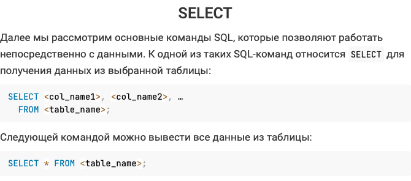
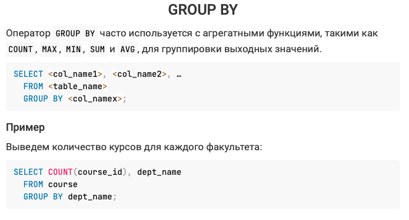
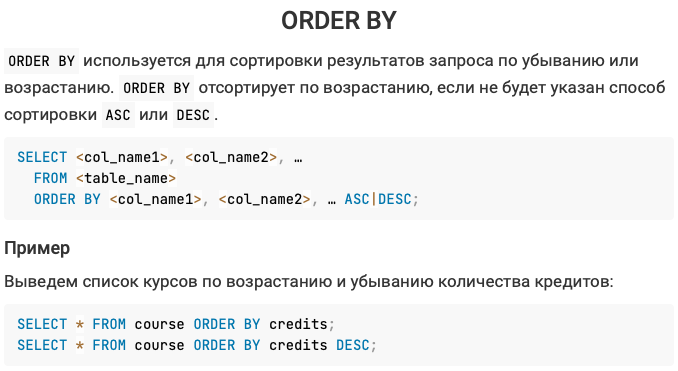
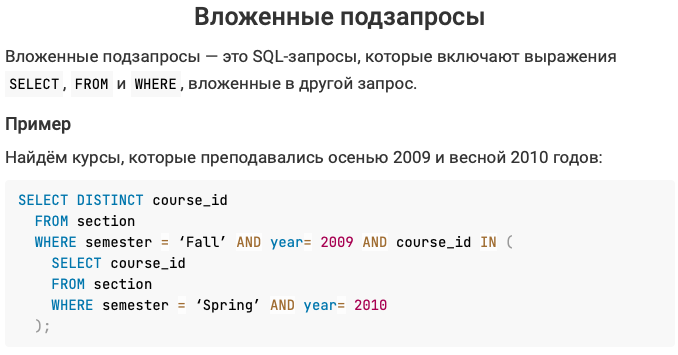
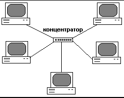
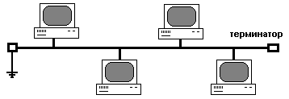
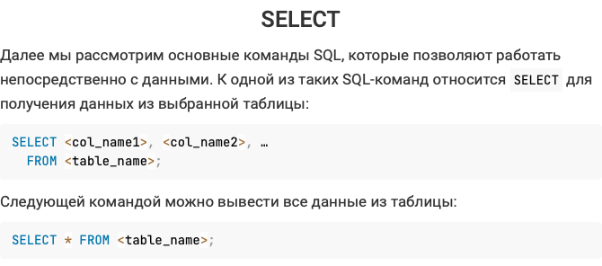
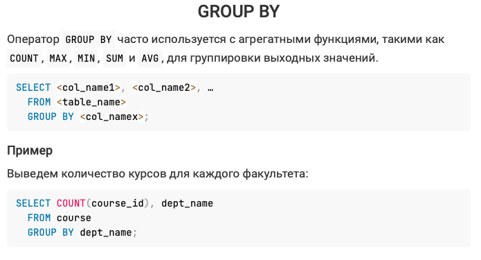
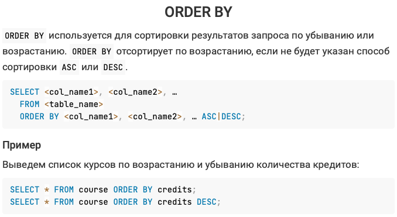
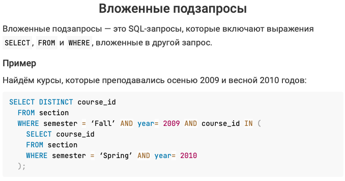
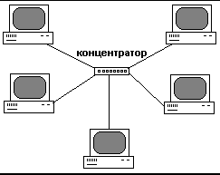
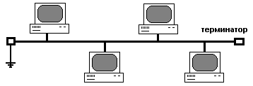